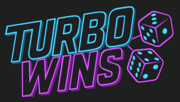
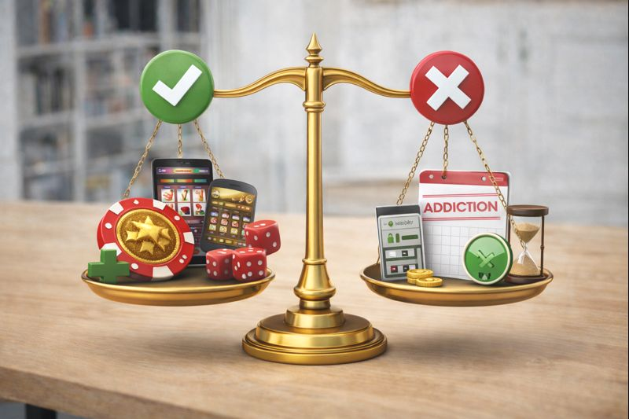
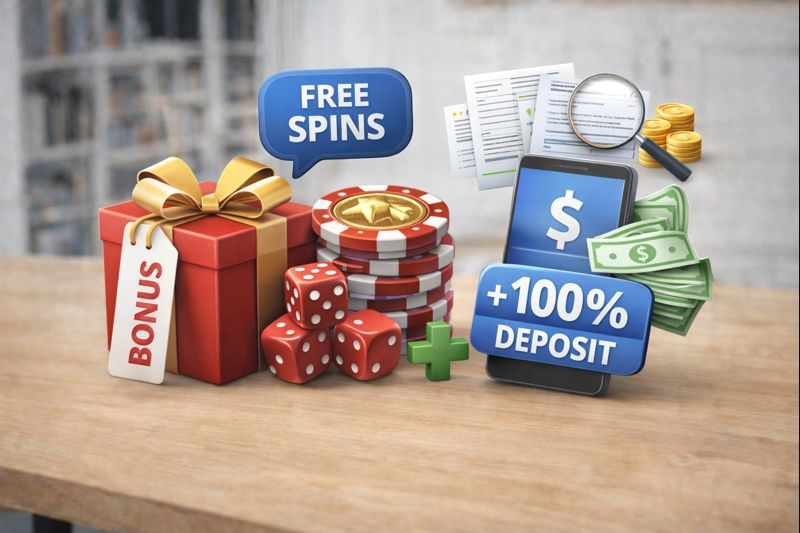

TurboWins
200% bonus do 5000 PLN + 50 darmowych spinów
Sprawdź ofertęWitamy na stronie będącej w pełni niezależnym kompendium wiedzy dla graczy z Polski. Znajdziesz tutaj opinie o kasynach online tworzone w oparciu o realne doświadczenia graczy, dogłębne testy oraz analizę faktów. Naszym celem jest dostarczenie obiektywnych, szczegółowych recenzji, które pomogą Ci podjąć świadomą decyzję. Na bieżąco sprawdzamy także nowe kasyno online pojawiające się na polskim rynku, weryfikując ich ofertę, bezpieczeństwo i warunki. Nie znajdziesz tu sloganów marketingowych, a jedynie rzetelną informację.
200% bonus do 5000 PLN + 50 darmowych spinów
Sprawdź ofertę150% bonus do 3000 PLN + 100 darmowych spinów
Sprawdź ofertę200% bonus do 2000 PLN + 50 darmowych spinów
Sprawdź ofertę100% bonus do 5000 PLN + 75 darmowych spinów
Sprawdź ofertę200% bonus do 5000 PLN + 50 darmowych spinów
Sprawdź ofertę175% bonus do 4000 PLN + 40 darmowych spinów
Sprawdź ofertę200% bonus do 5000 PLN + 50 darmowych spinów
Sprawdź ofertę120% bonus do 2500 PLN + 80 darmowych spinów
Sprawdź ofertęOpinie o kasynach internetowych to subiektywne oceny i doświadczenia graczy, które w połączeniu z obiektywną analizą warunków regulaminów tworzą kompletny obraz danej platformy. W środowisku pełnym intensywnej reklamy, rzetelne opinie są kluczowym źródłem informacji.
Opinie graczy na forach internetowych pomagają w podjęciu świadomych decyzji
Pozwalają one ocenić nie tylko atrakcyjność bonusów, ale przede wszystkim sprawdzić, jak kasyno funkcjonuje w praktyce: czy wypłaty są realizowane terminowo, jak wygląda obsługa klienta oraz czy operator działa uczciwie. To właśnie opinie często ujawniają istotne szczegóły, które nie są widoczne w opisie promocyjnym.
Nasz proces tworzenia recenzji jest wieloetapowy i ma na celu jak najbardziej obiektywną ocenę. Każde kasyno testujemy w praktyce, rejestrując konto, korzystając z bonusów i dokonując wypłaty. Analizujemy również setki opinii z forów i portali społecznościowych, by uchwycić zbiorowe doświadczenie graczy.
Proces testowy każdego kasyna obejmuje wszystkie etapy - od rejestracji po wypłatę
Sprawdzamy, czy proces rejestracji jest prosty i intuicyjny dla polskiego gracza, czy wymagana jest weryfikacja konta (KYC) oraz jak wygląda logowanie i bezpieczeństwo danych.
Szczegółowo analizujemy ofertę promocyjną, ze specjalnym uwzględnieniem bonusów dla nowych graczy. Najwięcej uwagi poświęcamy warunkom obrotu (wagering requirements) – kluczowemu parametrowi, który decyduje o realnej wartości bonusu.
To jeden z najważniejszych aspektów. Testujemy różne metody płatności dostępne dla Polaków (m.in. przelewy bankowe, BLIK, e-portfele) i mierzymy rzeczywisty czas od złożenia wniosku do otrzymania środków na konto.
Warto wiedzieć: Czas wypłaty liczy się od momentu zatwierdzenia dokumentów przez kasyno, nie od złożenia wniosku.
Oceniamy dostępność, życzliwość i profesjonalizm działu obsługi klienta, zwłaszcza w języku polskim. Sprawdzamy kanały kontaktowe (czat na żywo, email, telefon) i czas reakcji.
Weryfikujemy legalność działania kasyna – sprawdzamy posiadaną licencję (np. Curacao, Malta Gaming Authority) oraz stosowane zabezpieczenia technologiczne (SSL, RNG). To podstawa zaufania.
Licencja hazardowa to podstawowy element weryfikacji wiarygodności kasyna
Nowe kasyno online często kusi graczy atrakcyjnymi promocjami i świeżym podejściem. W naszych recenzjach szczegółowo opisujemy te nowości na rynku. Sprawdzamy, czy obietnice marketingowe idą w parze z praktyką.
Nowe platformy bywają bardzo innowacyjne, ale wymagają też szczególnej czujności – czasem ich procedury i stabilność działania są jeszcze w fazie dopracowywania. Dzielimy się pierwszymi doświadczeniami graczy dotyczącymi płynności gry, dostępności gier od topowych dostawców oraz początkowych problemów technicznych, jeśli takie występują.
Zebrane opinie graczy pozwalają wyodrębnić powtarzające się zalety i wady.
Każdy gracz powinien świadomie ważyć zalety i wady gry online
Bonusy są często głównym magnesem, но их истинная ценность становится ясна после прочтения правил. Анализируем их, чтобы отделить маркетинг от фактов.
Analiza bonusów wymaga uważnego czytania warunków obrotu
Opisujemy różne jego formy: darmowe spiny, bonus od depozytu (np. 100% do 500 PLN) lub ich mieszankę. W opiniach zwracamy uwagę na to, jak gracze oceniają realne szanse na spełnienie warunków i wypłatę wygranych z takiego bonusu.
To oferta, która pozwala rozpocząć grę bez ryzyka własnych środków. Podkreślamy, że choć jest to doskonały sposób na przetestowanie kasyna, to takie bonusy również mają swoje, często bardzo restrykcyjne, warunki obrotu i maksymalne kwoty wypłaty.
Wyjaśniamy kluczowe pojęcia: obrót (wagering requirement), gry wliczane w obrót w różnym procentowo, limity czasowe na spełnienie warunków oraz ograniczenia dotyczące maksymalnego zakładu podczas gry na bonus. To właśnie te czynniki decydują, czy bonus jest wartościowy.
Szybkość i niezawodność wypłat to miara wiarygodności kasyna. W naszych recenzjach podajemy średni czas realizacji wypłat dla różnych metod dostępnych w Polsce: przelewów bankowych, BLIK, e-portfeli (Skrill, Neteller) czy kart płatniczych.
Różne metody płatności oferują różny czas realizacji wypłat
Opinie graczy są tu nieocenione – często wskazują na ewentualne opóźnienia, problemy z dokumentacją lub różnice w czasie przetwarzania w zależności od metody. Doradzamy też, na co zwrócić uwagę przed pierwszym zgłoszeniem wypłaty.
Bezpieczeństwo to absolutny priorytet. Wyjaśniamy, jakie certyfikaty и лицензии должно иметь заслуживающее доверия казино. Объясняем роль генераторов случайных чисел (RNG) и аудитов таких фирм, как eCOGRA.
Zaawansowane zabezpieczenia to podstawa bezpieczeństwa w kasynach online
W sekcji z opiniami wskazujemy, czy gracze czują się bezpiecznie, czy kasyno rzetelnie traktuje dane osobowe oraz jak reaguje na ewentualne próby nadużyć. Prawdziwe bezpieczeństwo to połączenie technologii, regulacji i uczciwości operatora.
Sytuacja prawna hazardu online w Polsce jest specyficzna – monopol na większość form hazardu ma państwowy Totalizator Sportowy. Działalność kasyn z licencjami międzynarodowymi funkcjonuje w pewnej szarej strefie, skupiając się na grach losowych.
W naszych materiałach wyjaśniamy te zawiłości prawne. Opinie polskich graczy często poruszają kwestie dostępności polskiej waluty (PLN), języka, wsparcia oraz metod płatności dostosowanych do rodzimego rynku.
Pamiętaj: Zawsze graj odpowiedzialnie. Ustal limity czasowe i finansowe przed rozpoczęciem gry.
W Polsce legalny hazard online jest oferowany wyłącznie przez Totalizator Sportowy. Kasyna działające w oparciu o licencje zagraniczne (np. z Curacao) są dostępne dla polskich graczy, ale ich status prawny nie jest w pełni regulowany przez polskie prawo. Gra w nich wiąże się z ryzykiem prawnym po stronie operatora, a nie gracza.
Należy szukać ich na niezależnych forach hazardowych, portalach z recenzjami (takich jak nasz) oraz w mediach społecznościowych. Unikaj opinii zamieszczonych wyłącznie na stronach samego kasyna. Zwracaj uwagę na powtarzające się wątki – zarówno pozytywne, jak i negatywne.
Nie zawsze. Choć nowe kasyna chcą zdobyć renomę i często oferują atrakcyjne warunki, zawsze należy je zweryfikować z podwójną starannością. Sprawdź licencję, właściciela, warunki regulaminów i pierwsze opinie graczy z forów.
Czas wypłat zależy od metody płatności и процедур казино. E-portfele (Skrill, Neteller) to часто 24-48 часов, банковские переводы 1-5 рабочих дней. Ключевым также является время на утверждение выплаты казино, которое должно быть указано в правилах.
Tak, ale głównie jako darmowa okazja do przetestowania kasyna i jego gier bez angażowania własnych środków. Aby realnie na nim skorzystać, trzeba dokładnie przeanalizować warunki obrotu i limit wypłaty, które zwykle są bardzo restrykcyjne.
Opinie o kasynach online są niezwykle cennym narzędziem, ale wymagają krytycznego podejścia. Pojedyncza, skrajnie negatywna lub pozytywna opinia może być subiektywna. Prawdziwy obraz wyłania się z analizy wielu źródeł: rzetelnych recenzji, forów dyskusyjnych i własnego, ostrożnego testowania (najlepiej zaczynając od bonusu bez depozytu).
Zaufanie warto budować na platformach z przejrzystą licencją, uczciwymi regulaminami i pozytywną, potwierdzoną reputacją wśród społeczności graczy. Naszym celem jest dostarczenie Ci kompletnej, obiektywnej informacji, która stanie się solidnym fundamentem Twoich decyzji.